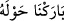
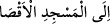

Mekke’ye gitmek istese ihramsız olarak bu bölgeleri geçmesi helal değildir. Sen buna
namaz için mescidlere ve ziyaret için gönül erbâbı olan meşâyıhın huzuruna girmeyi
kıyas et. Çünkü her ikisi için de zâhir ve bâtın edebi gerekir.
Anlatıldığına göre hacer-i esved cennetten çıkarıldığında kendisine has bir ışığı vardı.
Onun ışığının ulaştığı her yer Harem bölgesi oldu.
İbn Abbas (r.a.)’dan rivâyet edilmiştir: “Adem (a.s.) yeryüzüne inince Allah’tan özür
dilemek için secdeye kapandı. Allah Teâlâ yedi sene sonra ona tevbesinin kabul
edildiğini bildirmek için Cebrâil (a.s.)’ı gönderdi. Bunun üzerine Âdem (a.s.) Allah
Teâlâ’ya arşı tavaftan mahrum kalmasından şikâyet etti. Allah Teâlâ da ona Beyt-i
ma‘mûru indirdi.
Beyt-i ma‘mûr kırmızı yakuttandı. Doğu ile Batı arasını aydınlattı. Cin ve şeytanlar bu
nurdan kaçtılar, korktular. Ona bakarak havaya dağıldılar. Mekke tarafından nûru
gördükleri zaman yaklaşmak için ona yöneldiler. Allah Teâlâ da meleklerini gönderdi.
Harem etrafında bugün işâretlerin bulunduğu yerde dikilip onların yaklaşmasına mâni
oldular. Bundan dolayı Harem’e “Harem” diye isim verilmiştir.
“
Çevresini” din ve dünya bereketleri ile “mübarek kıldığımız …” Çünkü
orası Mûsâ (a.s.)’dan beri meleklerin ve vahyin iniş yeri, peygamberlerin ibadetgahıdır.
Etrafı nehirlerle ve meyve ağaçları ile çevrilidir. Dımaşk/Şam, Ürdün ve Filistin
çevresindeki şehirlerdendir.
“
Mescid-i Aksâ’ya”
Mescid-i Aksâ, Beytü’l-makdis’tir. “el-Aksâ” diye isim verilmesi, Mescid-i Haram’a
en uzak mescid olduğundan dolayıdır. Çünkü o zaman daha ötede başka mescid yoktu.
Dolayısıyla Beytü’l-makdis, mescidlerin Mekke’ye en uzak olanı olup aralarındaki
mesafe bir aylık yoldan fazlaydı.
Âriflerden birisi der ki: Allah, Mescid-i Haram’la kalb makamına işâret etmiştir.
Orasını bedenî hayvânî kuvvetlerin müşrik olanlarının tavaf etmeleri, rezilliklerini ve
hatalarını işlemeleri haram kılınmıştır. Ancak hayvânî ve yırtıcı sıfatlarla vasıflanmış
kuvvetlerin dışındakiler haccedebilir. Mescid-i Aksa ile de zâtî tecellîlere şâhid olmak
için cismânî âlemden daha uzak olan ruh makamına işâret etmiştir.
Hediyyetü’l-mehdiyyîn’de der ki: “Nebî (a.s.)’ın Mescd-i Aksâ’ya uyanık olarak
mi‘racı Kitab’la; cesed ile mi’racı ise ikinci asırdaki icmâ ile sâbittir. Göğe mi‘racı
meşhur haberle; cennete, arşa gitmesi veya bütün âlemi dolaşması haber-i vâhid ile
sâbittir.”
Kâşifî der ki: “O Hazret’in Mekke’den Beytü’l-makdis’e gitmesi Kur’ân’ın nassı ile
sâbittir. Onu inkâr eden kâfir olur. Göklere mi‘racı ve yakınlık mertebesine ulaşması
sahih meşhur hadisler, tevâtür derecesine yakın olarak sâbit olmuştur. Kim onu inkâr
ederse dalâlet ve bid‘at ehlinden olur.”
Nebî’nin mi‘râcına şâhid çoktur
Onu ikrar etmeyen kâfir olur.